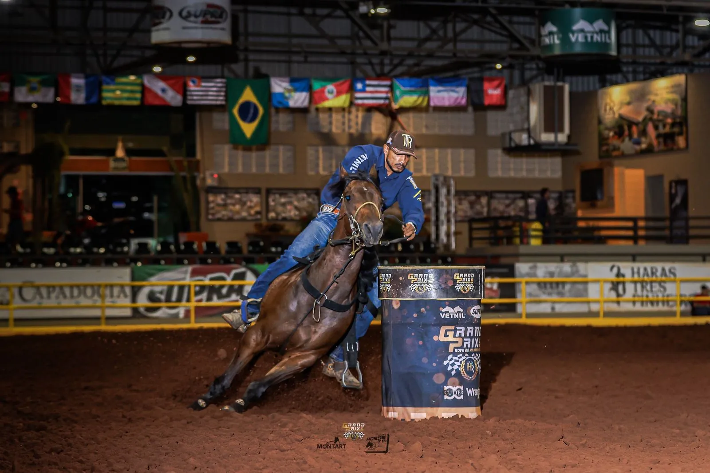

B2B Brave Rolls runner-up in the Gold Final, Potro do Futuro PF & Copa WV 2026
B2B Brave Rolls and Keverson de Souza placed second in the Gold Final of the 2026 PF & Copa WV Potro do Futuro.

- 2nd · Potro do Futuro Gold Final: B2B Brave Rolls, Keverson de Souza
By B2B Lucius Ta Fame, one of the great stallions at B2B Ranch, B2B Brave Rolls proves in the arena the strength of bloodlines built for speed, performance and results.
It is a result that adds value not only to one athlete, but to all the work behind bloodlines that keep earning a place among the big names in the sport.
B2B Ranch · Passionate about great horses